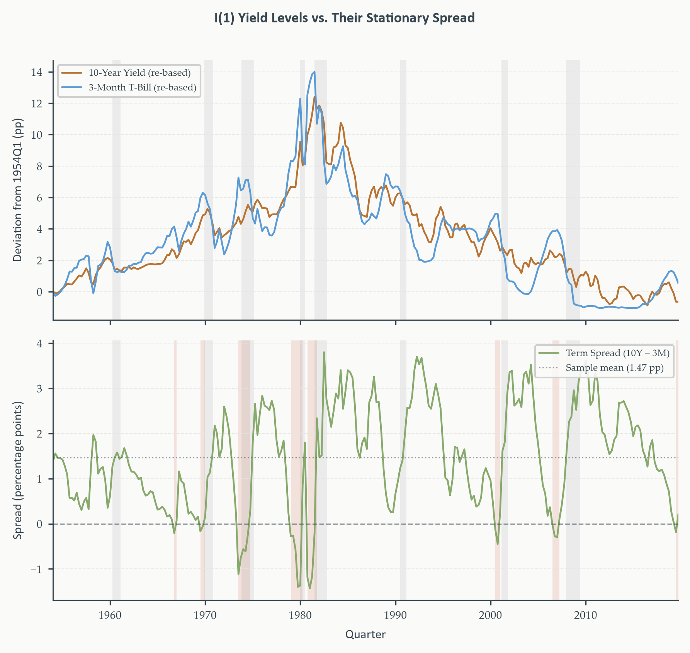
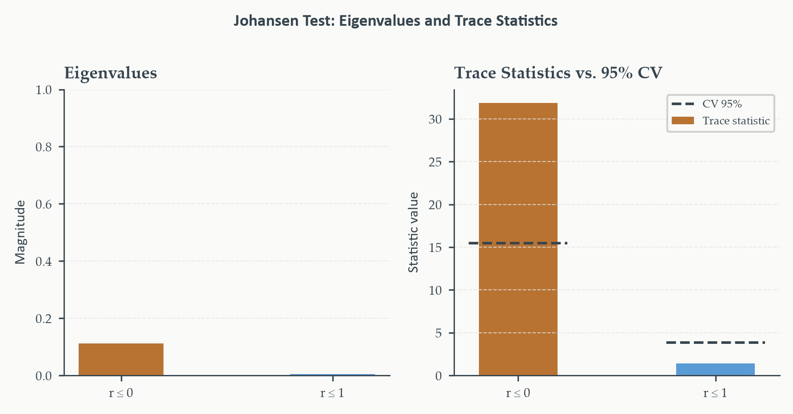
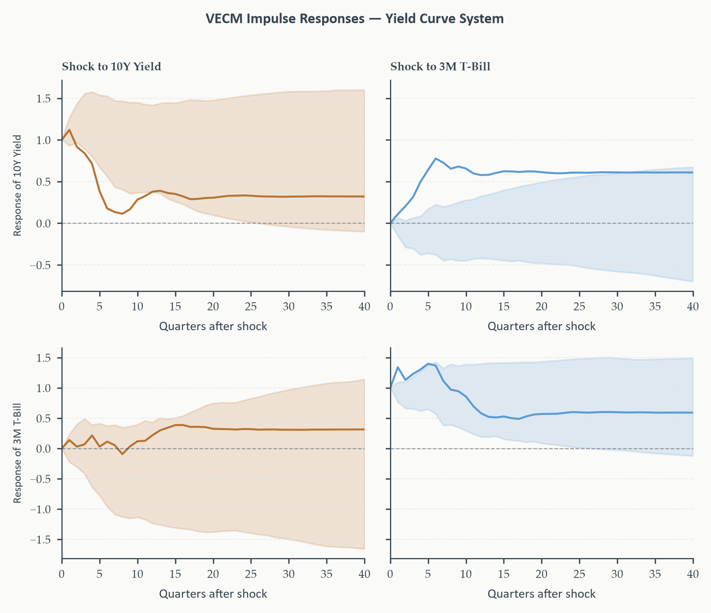
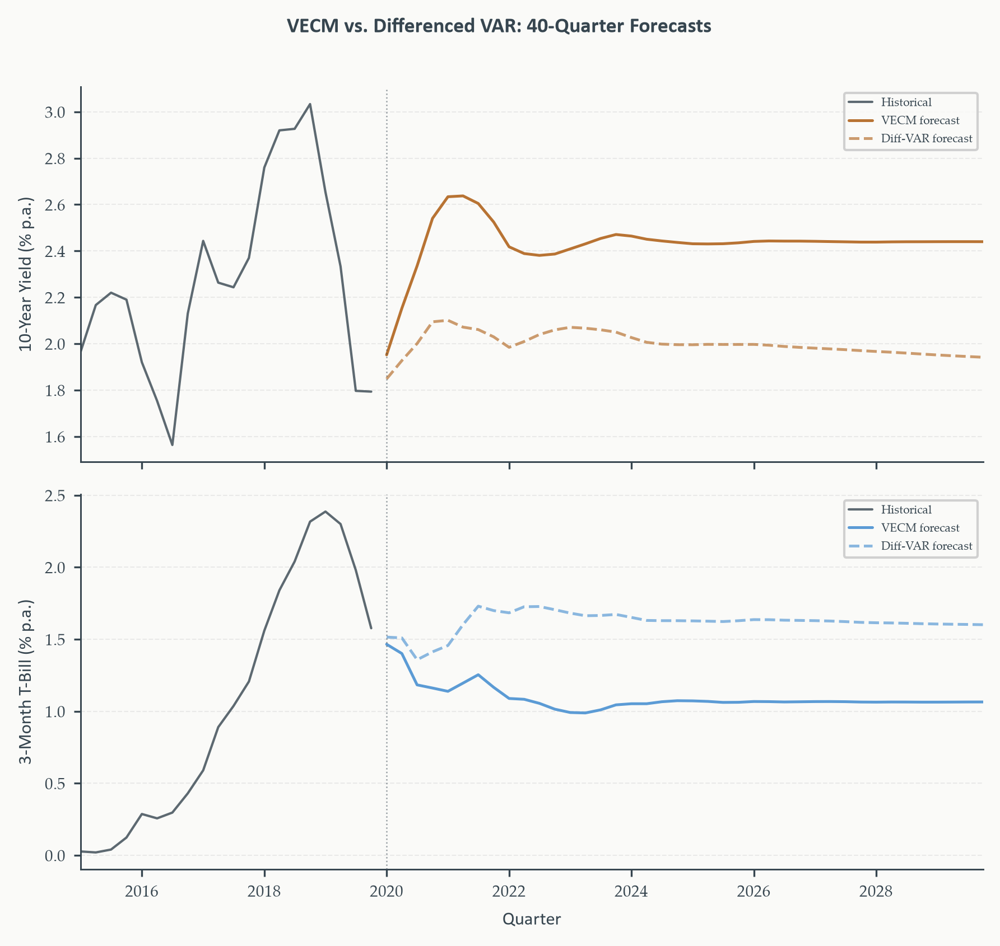

Chapter 8
2026-08-27
Chapter 7 built the complete VAR toolkit — Granger causality, structural identification, impulse responses — but relied on one assumption throughout: every variable stationary. What happens to two genuinely \(I(1)\) series that can’t just be differenced away?
This chapter resolves the boundary properly. Not a patch on Chapter 7 — a genuinely new representation of the VAR that keeps the long-run relationship explicit instead of discarding it.
One new representation of the VAR, three tools built on top of it:
Running example: the US yield curve — the 10-year Treasury yield and the 3-month T-bill rate. Both driven by the same monetary policy and inflation expectations; their spread is one of the most closely watched recession indicators in macroeconomics.
Section 1
The 10-year Treasury yield and the 3-month T-bill rate rarely move in lockstep quarter to quarter — but do they ever drift permanently apart?
The expectations hypothesis (EH) of the term structure. The long rate approximately equals the average of expected future short rates, plus a roughly constant term premium. If true: both rates share the same underlying stochastic trend — the path of monetary policy and inflation expectations — and their spread should be stationary, fluctuating around a constant premium rather than wandering without bound.
Both rates, individually, show every sign of a unit root — persistent, slow-moving, no fixed level to revert to. Exactly \(I(1)\) behavior, by Chapter 1 and 4’s criteria.
If both rates are \(I(1)\), why not just estimate the VAR from Chapter 7 directly on their levels?
Every inferential tool from Chapter 7 breaks. \(t\)-statistics, \(F\)-statistics, and information criteria all assume standard asymptotic distributions that simply don’t apply once the underlying variables are nonstationary. Lag selection becomes unreliable; Granger-causality tests have nonstandard null distributions; impulse responses don’t converge to zero as \(h\to\infty\) — they approach a nonzero constant, since a genuine unit root process has no fixed point for a shock to decay back toward.
The natural fix: difference both rates first, restore stationarity, apply Chapter 7’s tools cleanly. What’s lost?
Everything about the long-run relationship between the two rates. A VAR in \(\Delta r^{10}_t,\Delta r^{3m}_t\) can only ever describe how changes in one rate relate to changes in the other — it has no mechanism to notice that the levels are supposed to stay close together. If the two series are genuinely cointegrated, a differenced VAR is systematically misspecified: it omits an entire economically meaningful mechanism.
The stakes, concretely. If the spread is truly mean-reverting around a term premium, a differenced VAR treats today’s spread as “just another random walk realization” — with no pull back toward that premium at all. Section 7’s forecast comparison quantifies exactly how large this omission turns out to be.
Neither extreme works — not levels, not differences. What property would a correct model need?
A framework that: (1) recognizes both series are individually \(I(1)\); (2) simultaneously recognizes their spread is not \(I(1)\) — it’s stationary; and (3) uses that stationary combination as an explicit, estimable piece of the model, rather than an assumption smuggled in or an information discarded.
This is exactly what cointegration formalizes, and exactly what the vector error correction model is built to estimate. Section 2 makes the concept precise.
Section 2
Two individually \(I(1)\) series, algebraically — under what condition does a combination of them ever become stationary?
Suppose both accumulate the same stochastic trend:
\[ y_t = \mu_y+\tau_t+u_t^y, \qquad x_t = \mu_x+\tau_t+u_t^x, \qquad \tau_t=\tau_{t-1}+\eta_t \]
\(\tau_t\): a shared random walk. \(u_t^y,u_t^x\): stationary disturbances. Each series individually is \(I(1)\) — \(\tau_t\) enters both. Now form the difference:
\[ y_t-x_t = (\mu_y-\mu_x)+(u_t^y-u_t^x) \]
The common trend cancels exactly. What remains is a constant plus a difference of two stationary processes — itself stationary. Two \(I(1)\) series produce a stationary combination precisely when they share a common stochastic trend that cancels in the combination.
Cointegration. Two \(I(1)\) series \(y_t,x_t\) are cointegrated if there exists a constant \(\beta\) such that \(z_t=y_t-\beta x_t\) is \(I(0)\). \((1,-\beta)'\): the cointegrating vector. \(z_t\): the equilibrium residual or error correction term.
Not unique without normalization — \((c,-c\beta)'\) is equally valid for any \(c\neq0\); we normalize the coefficient on \(y_t\) to 1. Cointegrated series aren’t “always equal” or “always close” — their deviations from each other are bounded. Shocks push them apart temporarily; an equilibrating force eventually pulls them back.
If \(z_t=y_t-\beta x_t\) has mean \(\mu_z\), then in the long run, when \(z_t\) sits at its mean:
\[ y_t = \mu_z+\beta x_t \]
\(\beta\) is the long-run response of \(y_t\) to a permanent change in \(x_t\). The equilibrium residual measures the current deviation from that relationship — positive means \(y_t\) sits above its long-run value given \(x_t\); negative means below. For the yield curve, \(\beta=1\) would mean the two rates move one-for-one long-run, and \(r^{10}_t-r^{3m}_t\) is stationary around a constant term premium \(\mu_z\) — exactly the EH prediction.
With more than two \(I(1)\) variables, could there be more than one independent long-run relationship at once?
Cointegrating rank \(r\). The number of linearly independent cointegrating vectors among \(n\) \(I(1)\) variables, \(0\leq r\leq n-1\).
\(r=0\): no cointegration, \(n\) independent trends, differenced VAR correct. \(0<r<n\): \(r\) equilibrium relationships, \(n-r\) independent common trends, VECM correct. \(r=n\): impossible — would mean the variables are stationary, contradicting \(I(1)\).
For our two-variable yield system: only \(r=0\) or \(r=1\) are possible. The EH predicts \(r=1\) — Section 4’s Johansen test verifies this formally.
\[ \mathbf{y}_t = \boldsymbol\Gamma\mathbf{f}_t+\boldsymbol\xi_t \]
Stock-Watson (1988) common trends representation. \(\mathbf{f}_t\): \((n-r)\times1\) vector of common stochastic trends (random walks). \(\boldsymbol\Gamma\): \(n\times(n-r)\) loading matrix. \(\boldsymbol\xi_t\): stationary disturbances. Each variable is a combination of the \(n-r\) common trends plus a transitory component.
Cointegration means fewer independent trends than variables. The \(n-r\) trends are genuinely shared; the \(r\) cointegrating vectors are exactly the combinations that eliminate all of them simultaneously. For the yield curve with \(r=1\): one shared trend — the monetary policy/inflation-expectations cycle — and one cointegrating vector, the spread, that cancels it.
ADF and KPSS on the 10-year yield and 3-month rate, intercept-only (rates don’t trend indefinitely in one direction):
Both tests agree, for both series. ADF fails to reject the unit root null (\(p=0.74\), \(p=0.58\)); KPSS rejects stationarity (statistics of 0.65, 0.72, both exceeding the 5% critical value of 0.46). Confirmed \(I(1)\) — precisely the joint-testing discipline from Chapter 1 and 4, now applied to both variables before anything multivariate begins.
Top: both rates re-based to 1954 Q1 — drifting without bound, sharing the same broad shape through the inflationary 1970s and the post-Volcker decades.
Bottom: the spread — visibly mean-reverting, no long-run drift, occasionally negative (terracotta) but always correcting back.

Every recession in the sample was preceded by an inversion. The alignment between terracotta (inverted spread) and grey (NBER recession) shading is close to exact — one of the most robust empirical regularities in macroeconomics, and this chapter builds the formal language for understanding exactly why it holds.
Section 3
Section 1 showed we can’t estimate a levels VAR or a differenced VAR safely. Is there a third representation that reveals cointegration as a specific, testable algebraic restriction?
Start from the familiar VAR(\(p\)) in levels:
\[ \mathbf{y}_t = \mathbf{c}+\mathbf{A}_1\mathbf{y}_{t-1}+\cdots+\mathbf{A}_p\mathbf{y}_{t-p}+\mathbf{u}_t \]
Subtract \(\mathbf{y}_{t-1}\) from both sides and collect terms — the same algebra Chapter 4 used to convert an AR(\(p\)) into an ADF regression, now applied to the whole vector system at once.
\[ \Delta\mathbf{y}_t = \mathbf{c}+\boldsymbol\Pi\mathbf{y}_{t-1}+\boldsymbol\Gamma_1\Delta\mathbf{y}_{t-1}+\cdots+\boldsymbol\Gamma_{p-1}\Delta\mathbf{y}_{t-p+1}+\mathbf{u}_t \]
\[ \boldsymbol\Pi = \sum_{i=1}^p\mathbf{A}_i-\mathbf{I}_n, \qquad \boldsymbol\Gamma_i=-\sum_{j=i+1}^p\mathbf{A}_j \]
Looks like a VAR in differences, plus one extra term. \(\boldsymbol\Gamma_i\): the short-run dynamics — how changes today depend on recent changes, exactly the differenced-VAR content. \(\boldsymbol\Pi\mathbf{y}_{t-1}\): the only term touching lagged levels — this is where all the long-run information lives.
\(\boldsymbol\Pi\) is \(n\times n\). What does its rank actually tell us?
Three cases, three completely different models. \(\text{rank}(\boldsymbol\Pi)=0\): \(\boldsymbol\Pi=\mathbf{0}\), the levels term vanishes entirely — this is the differenced VAR, correct exactly when there’s no cointegration. \(\text{rank}(\boldsymbol\Pi)=n\): full rank, meaning the variables are stationary in levels — contradicts the \(I(1)\) assumption we started from, ruled out by design. \(0<\text{rank}(\boldsymbol\Pi)=r<n\): the genuinely interesting case.
When \(0<r<n\): \(\boldsymbol\Pi\) factors as the product of two \(n\times r\) matrices,
\[ \boldsymbol\Pi = \boldsymbol\alpha\boldsymbol\beta' \]
\(\boldsymbol\beta\): the \(r\) cointegrating vectors, as columns. \(\boldsymbol\alpha\): the speed-of-adjustment coefficients. \(\boldsymbol\Pi\mathbf{y}_{t-1}=\boldsymbol\alpha\boldsymbol\beta'\mathbf{y}_{t-1}\) becomes an \(n\times1\) vector of \(r\) stationary error correction terms, each weighted by how strongly that variable responds. This factorization is the VECM — Section 5 develops it fully.
Everything in the Johansen procedure flows from the rank of \(\boldsymbol\Pi\). The test doesn’t examine cointegrating vectors directly — it examines eigenvalues of a matrix derived from \(\boldsymbol\Pi\). A zero eigenvalue: rank-deficient in that direction. \(r\) nonzero eigenvalues: \(\text{rank}(\boldsymbol\Pi)=r\), \(r\) cointegrating relationships. Counting nonzero eigenvalues is determining cointegrating rank.
A \(2\times2\) example calibrated to the yield curve:
\[ \boldsymbol\Pi = \begin{pmatrix}-0.05&0.05\\0.12&-0.12\end{pmatrix} \]
The second column is exactly \(-1\times\) the first — rank 1 by inspection, one eigenvalue must be zero. Confirm via \(\det(\boldsymbol\Pi-\lambda\mathbf{I})=0\):
\[ (-0.05-\lambda)(-0.12-\lambda)-(0.05)(0.12)=0 \;\Longrightarrow\; \lambda^2+0.17\lambda=0 \]
\[ \lambda(\lambda+0.17)=0 \;\Longrightarrow\; \lambda_1=0,\quad \lambda_2=-0.17 \]
With \(r=1\), write \(\boldsymbol\Pi=\boldsymbol\alpha\boldsymbol\beta'\):
\[ \boldsymbol\alpha=\begin{pmatrix}-0.05\\0.12\end{pmatrix}, \qquad \boldsymbol\beta'=\begin{pmatrix}1&-1\end{pmatrix} \]
The cointegrating vector \((1,-1)'\) is exactly the EH restriction — \(y_{1t}-y_{2t}=\text{constant}\), the 10-year yield minus the 3-month rate equals a constant term premium. And the adjustment coefficients have an immediate economic reading: when the spread narrows below its long-run mean (negative error correction term), the long rate rises by \(0.05\times\) the deviation and the short rate falls by \(0.12\times\) — both forces widening the spread back toward equilibrium. The short rate adjusts more strongly, consistent with the Fed actively managing short rates while long rates move more sluggishly.
We never actually observe \(\boldsymbol\Pi\) — we estimate it from data, and the estimated eigenvalues are themselves random. The hand-solved example had exact zeros and clean rank; a real sample never does. The Johansen test uses the magnitudes of the sample eigenvalues to make formal inference about how many population eigenvalues are genuinely nonzero — separating “close to zero, probably actually zero” from “far enough from zero to represent a real cointegrating relationship.”
That formal inference procedure — the trace and maximum-eigenvalue statistics — is Section 4.
Section 4
Not eigenvalues of \(\hat{\boldsymbol\Pi}\) directly. A reduced-rank regression first concentrates out the short-run dynamics \(\boldsymbol\Gamma_i\Delta\mathbf{y}_{t-i}\), then finds the \(r\) linear combinations of \(\mathbf{y}_{t-1}\) most correlated with \(\Delta\mathbf{y}_t\) after that partialling-out. The resulting \(\hat\lambda_i\) are squared canonical correlations between \(\Delta\mathbf{y}_t\) and \(\mathbf{y}_{t-1}\), lying in \([0,1]\).
\(\hat\lambda_i\) near 0: that combination of \(\mathbf{y}_{t-1}\) has no predictive content for \(\Delta\mathbf{y}_t\) — nonstationary. \(\hat\lambda_i\) near 1: strong predictive content — stationary, a genuine cointegrating combination.
Trace statistic. \(H_0:\text{rank}\leq r\) vs. \(H_1:\text{rank}>r\):
\[ \lambda_{\text{trace}}(r) = -T\sum_{i=r+1}^n\ln(1-\hat\lambda_i) \]
Maximum eigenvalue statistic. \(H_0:\text{rank}=r\) vs. \(H_1:\text{rank}=r+1\) specifically:
\[ \lambda_{\max}(r,r+1) = -T\ln(1-\hat\lambda_{r+1}) \]
Trace as the primary test — better power when true rank exceeds the null by more than one; max-eigenvalue as a check, more focused but less powerful in that case. Neither follows a standard \(\chi^2\); critical values depend on \(n-r\) and the deterministic specification, tabulated and reported automatically by software.
Start at the most restrictive null, \(r=0\); test against \(r\geq1\). Reject \(\to\) move to \(r=1\), test against \(r\geq2\). Continue until first failing to reject — that rank is \(\hat r\).
Sequential testing inflates the Type I error rate. Each step is its own hypothesis test; the overall procedure does not control the error rate at the nominal level across all steps combined — in practice, a tendency to slightly over-reject low rank. Remedies: a small-sample Bartlett correction where available, or — more commonly — treat results as strongly suggestive and check robustness by estimating VECMs at adjacent ranks.
Before running the test, does the cointegrating relationship itself have a nonzero mean? Do the levels drift deterministically?
Case 2 (restricted intercept, no trend): \(\boldsymbol\beta'\mathbf{y}_t=\mu_0\), nonzero long-run mean, but no deterministic drift in the variables. Case 3 (unrestricted intercept): both the cointegrating relation and short-run equations get an intercept, letting levels drift linearly while the cointegrating relation itself doesn’t trend.
For the yield curve: Case 2. Interest rates don’t trend in one direction indefinitely — even the post-Volcker decline was a long but bounded episode — and the EH implies the spread fluctuates around a constant term premium, no trend. coint_johansen(det_order=0) is Case 2 exactly.
Lag selection for the levels VAR: BIC picks \(p=2\); AIC picks \(p=8\).
We proceed with AIC’s \(p=8\) — Section 6’s residual diagnostics show \(p=2\) leaves significant autocorrelation in the short-rate equation, confirming BIC is too parsimonious here. Same “criteria disagree, diagnostics resolve it” pattern as Chapters 4 and 7. The lag order passed to coint_johansen is \(p-1=7\), since the VECM representation has \(p-1\) differenced lags.
| \(H_0\): rank \(\leq\) | Eigenvalue | Trace | CV 95% | Decision |
|---|---|---|---|---|
| 0 | 0.107 | 33.33 | 15.49 | Reject |
| 1 | 0.014 | 3.61 | 3.84 | Fail to reject |
At \(r=0\): trace far exceeds the critical value — reject decisively. At \(r=1\): trace sits just below the critical value — fail to reject. Estimated rank \(\hat r=1\): one cointegrating relationship, one common stochastic trend — exactly the EH prediction from Section 1, and exactly what the hand-solved \(2\times2\) example previewed.

Left: the first eigenvalue (0.107) sits clearly above zero — a genuinely stationary combination exists. The second (0.014) sits close to zero — no second cointegrating relationship, consistent with a single common stochastic trend. Right: the trace statistics against their critical values, visually confirming the reject-then-fail-to-reject pattern from the table.
Section 5
Substituting Section 3’s factorization \(\boldsymbol\Pi=\boldsymbol\alpha\boldsymbol\beta'\) directly into the VECM representation:
\[ \Delta\mathbf{y}_t = \mathbf{c}+\boldsymbol\alpha\boldsymbol\beta'\mathbf{y}_{t-1}+\boldsymbol\Gamma_1\Delta\mathbf{y}_{t-1}+\cdots+\boldsymbol\Gamma_{p-1}\Delta\mathbf{y}_{t-p+1}+\mathbf{u}_t \]
Two genuinely distinct components, not a relabeling. The short-run piece — \(\boldsymbol\Gamma_i\Delta\mathbf{y}_{t-i}\) — captures how today’s changes depend on recent changes, exactly the differenced-VAR content. The long-run piece — \(\boldsymbol\alpha\boldsymbol\beta'\mathbf{y}_{t-1}\) — captures how today’s changes depend on last period’s deviation from equilibrium. A differenced VAR has no equivalent to this second piece at all.
With \(r=1\), the two-variable system equation by equation:
\[ \begin{aligned} \Delta r^{10}_t &= c_1+\alpha_1\underbrace{(r^{10}_{t-1}-\beta r^{3m}_{t-1})}_{\text{error correction term}}+\gamma_{11}\Delta r^{10}_{t-1}+\gamma_{12}\Delta r^{3m}_{t-1}+u_{1t} \\ \Delta r^{3m}_t &= c_2+\alpha_2\underbrace{(r^{10}_{t-1}-\beta r^{3m}_{t-1})}_{\text{error correction term}}+\gamma_{21}\Delta r^{10}_{t-1}+\gamma_{22}\Delta r^{3m}_{t-1}+u_{2t} \end{aligned} \]
The term in parentheses is exactly the equilibrium residual from Section 2 — the lagged deviation of the long rate from its long-run relationship with the short rate. Positive: long rate above equilibrium. Negative: inverted yield curve. \(\alpha_1,\alpha_2\) determine how strongly each rate responds to that disequilibrium.
The EH predicts \(\beta=1\) exactly. Does the freely estimated Johansen \(\hat\beta\) come anywhere close?
\(\hat\beta=1.0218\) — differing from the theoretical value of 1 by just 0.02. Close enough that the restriction is unlikely to be rejected by a formal test; imposing \(\beta=1\) exactly would make the error correction term literally the raw yield spread, the most familiar quantity in the term-structure literature. The empirical work below uses the freely estimated \(\hat\beta=1.0218\) — the equilibrium residual is exactly Section 2’s Johansen residual.
Reduced-rank regression, in two steps. Step 1 (already done, Section 4): the Johansen procedure estimates \(\hat{\boldsymbol\beta}\) as the eigenvectors corresponding to the \(r\) largest canonical-correlation eigenvalues. Step 2: given \(\hat{\boldsymbol\beta}\), estimate \(\hat{\boldsymbol\alpha}\) and \(\hat{\boldsymbol\Gamma}_i\) by OLS of \(\Delta\mathbf{y}_t\) on \(\hat{\boldsymbol\beta}'\mathbf{y}_{t-1}\) and the lagged differences — an ordinary regression, once \(\hat{\boldsymbol\beta}\) is treated as known.
statsmodels’ VECM class runs both steps in one call — coint_rank=1, deterministic="ci" matching Section 4’s Case 2 specification exactly.
| Coefficient | Interpretation | |
|---|---|---|
| \(\hat\beta\) (on 3-month rate) | \(1.0218\) | Long-run one-for-one comovement |
| Term premium | \(\approx1.35\)pp | Matches sample mean spread (1.47pp) |
| \(\hat\alpha_1\) (10-year yield) | \(-0.056^{**}\) | Long rate falls when spread above equilibrium |
| \(\hat\alpha_2\) (3-month rate) | \(0.084^{**}\) | Short rate rises when spread above equilibrium |
Both signs are exactly right, and both are significant at 5%. When the spread sits above its long-run mean, the long rate corrects downward and the short rate corrects upward — both forces narrowing the gap back toward equilibrium, precisely the mean-reverting mechanism the yield-curve figure showed visually in Section 2.
Why does the short rate (\(\hat\alpha_2=0.084\)) respond roughly 50% more strongly than the long rate (\(\hat\alpha_1=-0.056\))?
Consistent with how each rate is actually set. The Fed actively manages short rates in response to economic conditions; long rates move more sluggishly, shaped by slower-moving expectations. If \(\hat\alpha_i=0\) exactly for some variable, that variable is weakly exogenous — it still appears in the cointegrating vector (it matters for the long-run relationship) but bears none of the adjustment burden itself. Neither rate is weakly exogenous here — both actively participate in restoring equilibrium, just at different speeds.
Own-rate momentum from \(\hat{\boldsymbol\Gamma}_1\) (0.225 for the long rate, 0.234 for the short rate) tends to prolong rate movements in the short run — the additional lags beyond the first contribute only modest, largely insignificant increments.
Momentum and error correction pull in opposite directions on different time scales. Short-run momentum can push a rate further from equilibrium quarter to quarter; the error-correction force works against that momentum once the deviation grows large enough. Together: a system that can overshoot in the short run but reverts in the medium run — exactly the cyclical spread behavior visible in Section 2’s figure.
Section 6
A VECM is correctly specified only if its residuals are white noise — serially uncorrelated, homoskedastic, approximately normal. Where have we seen this checklist before?
Exactly Chapter 7’s VAR residual criteria, unchanged. Portmanteau test for serial correlation, Jarque-Bera for normality, a brief heteroskedasticity check. The VECM residuals are \(\hat{\mathbf{u}}_t=\Delta\mathbf{y}_t-\hat{\boldsymbol\alpha}\hat z_{t-1}-\sum_i\hat{\boldsymbol\Gamma}_i\Delta\mathbf{y}_{t-i}\) — one vector per observation.
| Test | Long Rate | Short Rate |
|---|---|---|
| Ljung-Box Q(8) | 1.7 (\(p=0.99\)) | 11.0 (\(p=0.20\)) |
| Jarque-Bera | \(55.3^{***}\) | \(610.5^{***}\) |
Ljung-Box fails to reject for both equations — the AIC-selected \(p=8\) fully absorbs the serial correlation the shorter BIC-preferred order left behind.
Jarque-Bera rejects normality strongly in both — entirely attributable to the Volcker-episode outliers (1980-82). This does not invalidate the VECM estimates or the cointegration conclusions, which rely on asymptotic theory, not normality. Fat tails from one dramatic historical episode are a data feature to note, not a specification flaw to fix.
Residuals passing in isolation only says the VECM is internally consistent. The sharper question: is it actually better than a differenced VAR that omits the error correction term entirely?
Estimate a differenced VAR at the same lag order; compare residual ACFs directly.
A genuinely surprising result: the two models’ residual ACFs are nearly identical. At the quarterly frequency, the \(\hat\alpha\) coefficients (0.056, 0.084) move each rate by only a few basis points per quarter — swamped by short-run momentum and noise. The ECT’s contribution is invisible in short-run residual diagnostics.
This is not a case against the VECM — it’s a statement about where cointegration’s value shows up. Not in one-step-ahead residual behavior, but in long-horizon forecast accuracy. Section 7’s 40-quarter comparison is the definitive test.
If the true system is cointegrated but you estimate a differenced VAR anyway, the ECT’s omission accumulates as forecast error over long horizons — invisible short-run, as we just saw, but decisive at long horizons. Section 7’s forecast comparison quantifies exactly how large: implied long-run spreads of 1.37pp (VECM) vs. 0.35pp (differenced VAR).
The Johansen test can reject “no cointegration” even when none genuinely exists — particularly in small samples or when the system contains an undetected structural break. The yield curve application is protected because the theory is strong: the EH gives a precise prediction for what \(\boldsymbol\beta\) should look like, and \(\hat\beta=1.0218\) lands almost exactly there. When theory is silent about the cointegrating vector, treat a significant trace statistic with more skepticism — robustness checks across subsamples become essential, not optional.
Costs are asymmetric. Rank too low: omits genuine error correction terms, reduces to the over-differencing problem above. Rank too high: introduces spurious error correction terms that add noise without explanatory power. Section 4’s sequential procedure guards against this but slightly over-rejects at low rank due to multiple testing — when any step’s result is marginal, estimating VECMs at adjacent ranks and comparing diagnostics is good practice, not excessive caution.
The Johansen test assumes the cointegrating relationship is stable across the entire sample. What if it isn’t?
A shift in the long-run relationship — a monetary regime change, a secular trend in underlying economic forces — degrades the test’s power and can produce misleading rank conclusions. Chapter 6’s structural break tools are the right response when a break is suspected: test for cointegration within stable subsamples, or allow the cointegrating intercept itself to shift via a dummy variable. The yield curve avoids this over 1954-2019 — but the log consumption/log income pair (Section 1) shows exactly how a secular shift, there in the saving rate, can destabilize an otherwise well-motivated cointegrating relationship.
Section 7
Identification proceeds exactly as Chapter 7: a Cholesky ordering. Long rate first, short rate second — the long rate can move contemporaneously with a shock before the Fed reacts within the same quarter; a shock to the short rate takes one period to reach the long rate.
What’s genuinely new: the impulse responses don’t decay to zero. In a stationary VAR, every response converges to zero — shocks are transitory by construction. In a VECM with \(r=1\), responses converge to a nonzero permanent level instead. This is not a bug — it’s the direct signature of a shared stochastic trend that a shock can genuinely, permanently shift.

All four panels converge to nonzero levels, not zero. A long-rate shock settles near +0.33pp in both rates; a short-rate shock settles near +0.60pp in both — larger, since \(|\hat\alpha_2|>|\hat\alpha_1|\) means the short-rate shock triggers a stronger, faster adjustment. The Cholesky restriction is visible directly: the short rate’s response to a long-rate shock is exactly zero at \(h=0\), then rises gradually.
Every shock in a cointegrated system decomposes into two genuinely distinct pieces. A permanent shock moves the common stochastic trend itself — an inflation-expectations or neutral-rate shift that relocates both rates’ long-run level and is never reversed. A transitory shock moves the spread away from equilibrium — a flight-to-safety episode compressing the term premium — and the error correction mechanism reverses it over subsequent quarters.
With \(r=1\) in a two-variable system: exactly one permanent shock, one transitory shock — no more, no fewer.
An inversion can arise from either type of shock. Does the VECM framework let us tell them apart?
A permanent shock that raises short rates more than long rates — the Volcker disinflation — produces an inversion that resolves only once both rates settle at their new long-run levels: slow, structural. A transitory shock that compresses the spread — a flight-to-quality episode — produces an inversion the ECT reverses more quickly, pulling both rates back toward the existing long-run relationship: faster, mechanical.
Neither a levels VAR nor a differenced VAR can make this distinction at all. The permanent/transitory split is available only once the cointegrating structure is made explicit — a capability unique to the VECM among everything built in this course so far.
Section 6 already showed the ECT is invisible in short-run residual diagnostics. Where does it actually matter?
Produce 40-quarter-ahead forecasts from both the VECM and the differenced VAR, starting from the end of the sample (2019 Q4).
Short horizons: nearly indistinguishable — the dominant force at 1-2 quarters ahead is short-run momentum, where both models agree. Long horizons: they diverge — the VECM’s error correction term pulls the spread back toward its estimated long-run mean; the differenced VAR has no such mechanism and lets the spread wander freely.

VECM: long rate settles near 2.44%, short rate near 1.07% — a long-run spread of 1.37pp, matching the estimated term premium exactly. Differenced VAR: 1.97% and 1.62% — a spread of only 0.35pp, implausibly small against sixty-five years of data averaging 1.47pp. The gap is visible from the first forecast quarter and widens continuously.
The differenced VAR is not a safe fallback — it is the wrong tool for any application where long-horizon forecasts matter. Pension fund liability matching, monetary policy projections, fixed-income portfolio construction — anywhere a multi-year forecast of the yield curve enters a real decision, ignoring cointegration produces forecasts that violate a relationship sixty-five years of data strongly support.
This is the answer to the question Section 1 opened with. Neither levels nor differences alone were correct; the VECM is what happens when you refuse both easy answers and build the long-run relationship in explicitly. The cost of getting this wrong is not abstract — it’s a quantified 1.02 percentage point gap in a forecast that compounds for as long as the horizon extends.
We resolved the boundary Chapter 7 left standing. Cointegration formalized the precise condition under which two \(I(1)\) series produce a stationary combination — a shared stochastic trend that cancels. The \(\Pi\) matrix showed exactly where that information lives inside a VAR, and its rank — tested formally by the Johansen procedure — determined how many such long-run relationships genuinely exist. The VECM reparameterized the system to make short-run dynamics and long-run equilibrium correction two distinct, separately estimable, economically interpretable pieces, validated on the yield curve with coefficients matching the expectations hypothesis almost exactly. Diagnostics confirmed the model was well-specified while revealing an important subtlety: the error correction term is invisible in short-run residuals and decisive only at long horizons — exactly what the closing forecast comparison then quantified precisely.
Every tool since Chapter 3 has assumed the innovations \(\varepsilon_t\) have constant variance. We have never once tested that assumption directly.
Every model since Chapter 3 has carried one further unstated assumption: that the variance of the innovations, \(\sigma^2\), is constant over time. Chapter 1 flagged this in passing — Chapter 3’s white noise discussion noted that squared innovations can be correlated even when the innovations themselves aren’t. We deferred that observation. It’s time to develop it properly.
Chapter 9 builds the ARCH and GARCH family — models where the conditional variance itself follows its own dynamic process, capturing the volatility clustering visible in almost every financial return series: calm periods and turbulent periods that persist and cluster together, rather than innovations of constant, unchanging size. This isn’t a minor technical refinement. For risk management, options pricing, and Value-at-Risk, the variance dynamics are often the entire object of interest — not a nuisance to average away, but the very thing being modeled.
ECON-5371 · Time Series Analysis and Forecasting